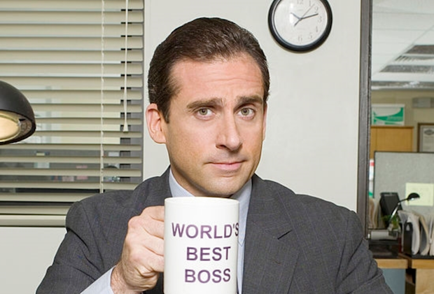

|  |
Michael Scott
Regional Manager of Scranton's Dunder Mufflin branch
Owner of a condo in downtown
Michael Gary Scott was born on March 15, 1965 in Scranton, Pennsylvania. He came from a relatively difficult childhood of loneliness. Michael had some trouble with his early education, shown in "Dunder Mifflin Infinity" as Michael tells
the
camera crew he was held back from second grade. In "Diversity Day", Michael claims to be of English, Irish, German, and Scottish ancestry. He also claims to be "two-fifteenths" Native American. He has mentioned a stepfather, Jeff, whom he
despises. In "Nepotism", it is revealed that Michael had a half-sister, from whom he was estranged for 15 years. As a consequence of their reunion, Michael hires his nephew Luke as an intern for the office, but eventually confronts the
incompetent and rude Luke and ends up spanking him in front of the office, leading Luke to burst into tears and quit.
|